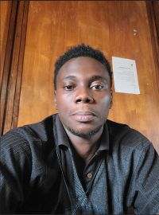
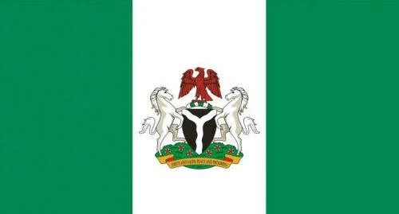

About Me
My name is Moses Kracar-Tee Norris. I am from Liberia, and I am currently studying web development at the Brigham Young University Idaho. I love Information Technology, Science, and Religious. I am a member of the Church Of Jesus Christ of Latter-Day Saints. I have served as a fulltime missionary in the then Nigeria Calabar Mission. The Mission has now been divided into two, namely the Nigeria Calabar Mission, and the Uyo Nigeria Mission. I love to learn new things always, and problem solving is my passion.
About Nigeria
Liberia is located on the West cost of Africa, bordered by Guinea on the north, Sierra Leone on the west, Ivory Coast on the east, and on the south by the Atlantic Ocean. The country is rich with various natural mineral resources, some of which include; Gold, Diamond, Iron Ore, Forest, Petroleum, ect. Our common slogan is 'The Sweet Land Of Liberty'. Yes indeed! My country Liberia is a home of sweet land of Liberty. As it is recorded on book, the country has about little over 16 ethnic groups. Liberia is build on Christian Principle, but other religious are free to practice their believe. Liberia was founded in July 26, 1847 by the American Colonization Society (ACS). We are one of the oldest independence nations in Africa. The population of Liberia is little over six (6) million inheritance. We are kind, and peaceful loving people.